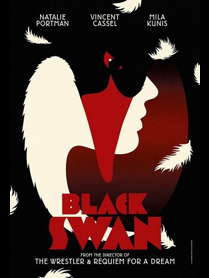

Media Combination
Intermediality in the sense of media combination includes phenomena such as opera, film, theater, performances, illuminated manuscripts, computer or Sound Art installations, comics, and so on. Media combination subdivides into multimedia, mixed media, and intermedia. The intermedial quality of this category is determined by the very process of combining at least two conventionally distinct media or medial forms of articulation. These two media or medial forms of articulation are each present in their own materiality and contribute to the constitution and signification of the entire product in their own specific way. Thus, for this category, intermediality is a communicative-semiotic concept, based on the combination of at least two medial forms of articulation (Rajewsky 2005).
Multimedia
Separable and coherently separated texts composed in different
media.
Ex: emblem, illustrated book.
Mixed media
Signs in different media that would not be coherent or
self-sufficient outside that context.
Ex: poster, comic strip,
postage stamp, titles and subtitles within the canvas (as in
Picaba’s L’oeil cocodylate, 1921).


Intermedia
Two or more sign systems or media in a way that the visual, musical,
verbal, kinetic, and performative aspects from their signs are
inseparable and indissociable.
Ex: visual poetry (Forsythia), calligram (such as Apollinaire’s),
typography (Daumier’s comic alphabet), Jasper Johns’
Alphabet, carmina figurata, hieroglyph, ideograms.
See also Media Transposition